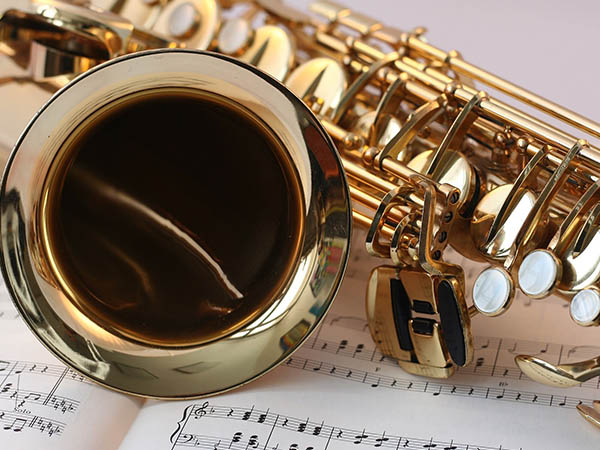

VIENTO
LLos instrumentos de viento o aerófonos son una familia de instrumentos musicales los cuales producen el sonido por la vibración del contenido de aire en su interior, sin necesidad de cuerdas o membranas porque solo requiere de la vibración del aire. Los aerófonos de metal producen un sonido de timbre fuerte. En este caso, el músico hace vibrar sus labios en una boquilla que genera la frecuencia acústica. Entre los aerófonos de metal podemos nombrar a la trompeta, la tuba y el trombón, entre otros.
Last updated 3 mins ago